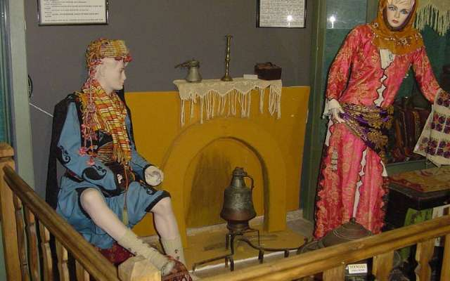

From Halicarnassus, city of the Mausoleum, to the mountain sanctuary of Labraunda – a route through Caria's lesser-known treasures.
Day 1

This unit of the Bodrum Museum of Underwater Archaeology is part of a collection spread across the towers and halls of Bodrum Castle, whose English, French, Italian and…

The Mausoleum site in ancient Halicarnassus holds the remains of the tomb built in the 4th century BC for the Carian satrap Mausolus – one of the Seven Wonders of the…

Bodrum Ancient Theatre, the theatre of ancient Halicarnassus, rests against the slope of Göktepe overlooking Bodrum bay.

The Zeki Müren Art Museum is set in the Bodrum house where Zeki Müren, legendary voice of Turkish art music known as the 'Sun of Art', spent his last years.
Day 2

The Uzunyuva Monumental Tomb and Museum Complex in central Milas holds a monumental tomb thought to belong to the Carian satrap Hecatomnus.
Milas Stone Works Museum, in ancient Mylasa – an important Carian city, first capital of the Hecatomnid dynasty and long known for its marble quarries – displays…

Beçin Castle and site, just south of Milas, lies on a plateau ringed by sheer cliffs.

Labraunda, in the mountains north of Milas amid pine forest, was Caria's most important sanctuary, dedicated to Zeus Labraundos – the name thought to derive from the…

Euromos, on the road between Milas and Söke amid olive groves, is known for its Temple of Zeus, one of the best-preserved temples in Anatolia.
Day 3

Stratonikeia, near Yatağan, is an important Carian city considered founded by the Seleucid kings and linked to Lagina by a sacred way.

Lagina, near Yatağan, was one of antiquity's most important sanctuaries of the goddess Hecate, linked to nearby Stratonikeia by a sacred way along which annual…

Muğla Museum, in the provincial centre, presents the region from prehistory to the Ottomans.
Ready-made routes organised day by day to help you plan. Durations are approximate; check opening hours and road conditions before you travel.